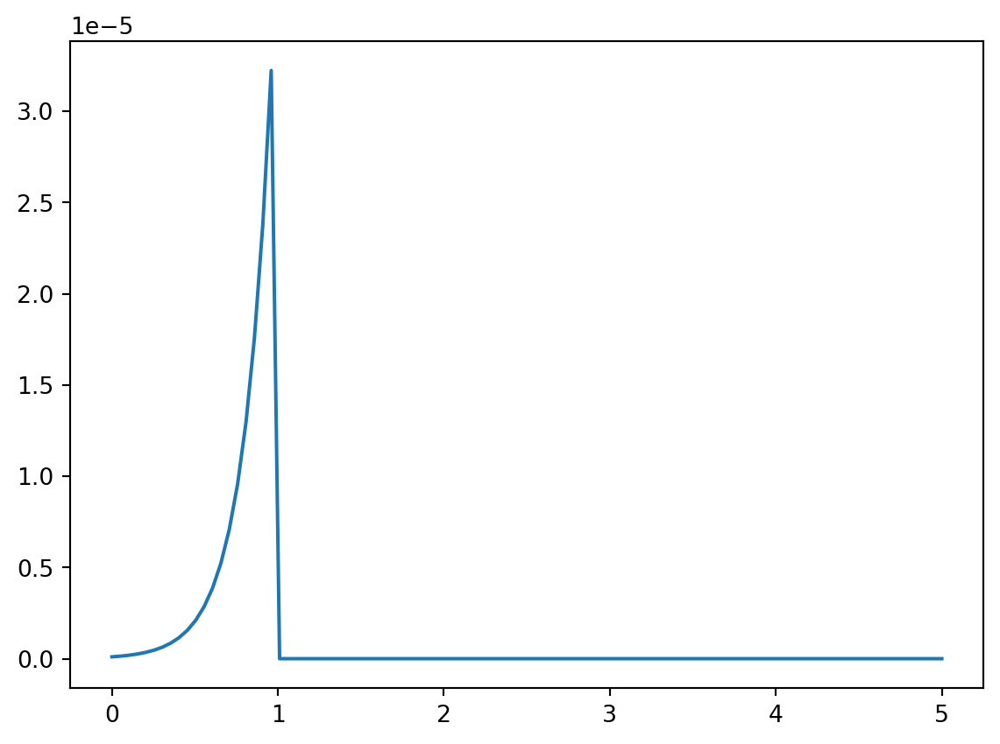
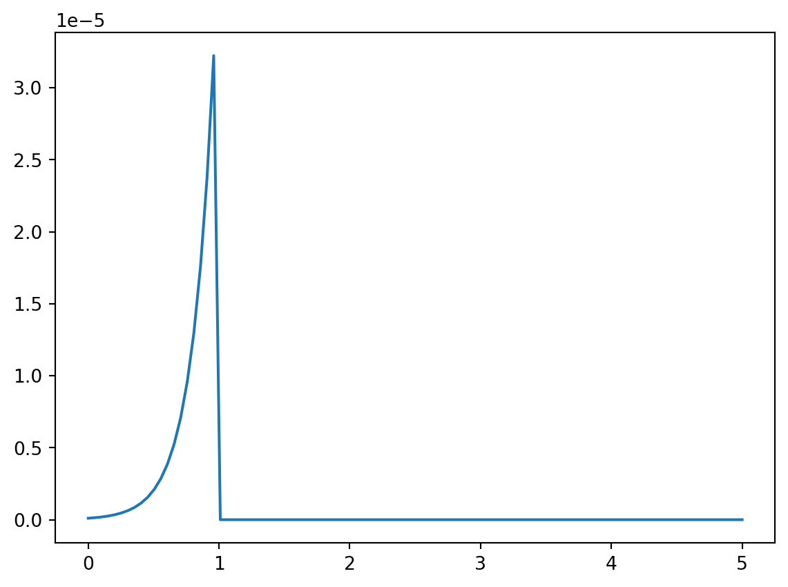

import matplotlib.pyplot as plt
import numpy as np
x = np.array([1, 1.1, 2, 3, 4, 5,])
delta = np.linspace(0, 5, 100)
likelihood = [(np.exp(-(x-d)) * (d <= x)).prod() for d in delta]
plt.clf()
plt.plot(delta, likelihood)
plt.show()
Update: 4/10: Removed some exercises.
The PDF of the Poisson distribution is \(f(x;\mu) = e^\mu/x!\mu^x\). The product of \(n\) such PDFs form the likelihood, which equals \[\prod_{i=1}^n \frac{e^\mu}{x_i!}\mu^{x_i}=\frac{e^\mu}{x_1!x_2!\cdots x_n!}\mu^{x_1+x_2+\cdots+x_n}\] by standard math rules.
Take the logarithm and compute \[l(\mu) = -n\mu - \log(x_1!x_2!\cdots x_n!) + \log(\mu)(x_1+x_2+\cdots+x_n).\]
The maximum likelihood estimator of \(\mu\) can be found by differentiation, \[\frac{d}{d\mu}l(\mu) = -n - 1/\mu\cdot(x_1+x_2+\cdots+x_n).\] Set the derivative to \(0\) and solve to find \(\mu=\overline{x}\), the sample mean of the data. Then use the invariance principle, which says that the maximum likelihood estimator of \(g(\mu)\) equals \(g(\hat{\mu}_{ML})\) to find the maximum likelihood estimator of \(e^{-\mu} = e^{-\hat{\mu}_{ML}}\).
import matplotlib.pyplot as plt
import numpy as np
x = np.array([1, 1.1, 2, 3, 4, 5,])
delta = np.linspace(0, 5, 100)
likelihood = [(np.exp(-(x-d)) * (d <= x)).prod() for d in delta]
plt.clf()
plt.plot(delta, likelihood)
plt.show()
The peak of the likelihood is at \(1 = \min x\), which is the maximum likelihood estimator of \(\delta\). The derivation is similar to the derivation for the uniform distribution. The likelihood increases with \(\delta\) until it heats the minimum, because \(\exp(-x\delta)\) is increasing in \(\delta\). Once it crosses the minimum though, the component of the product corresponding to the minimum will be equal to \(0\), hence the likelihood is \(0\) to the right of this point.